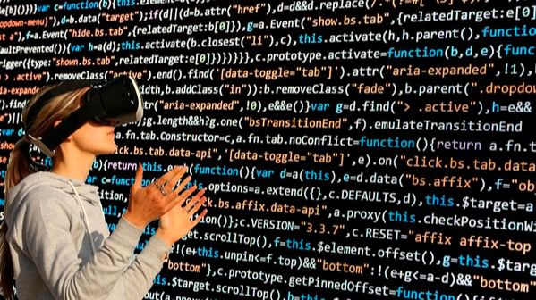

La programación ha sido la causante de que la tecnología haya podido avanzar hasta como la encontramos en la actualidad, permitiendo que se desarrollen inventos que faciliten la vida a todas las personas. En el blog Software Crafters tratan de enseñar a personas a programar mediante un tutorial de Python para aprender a programar. La ventaja de este lenguaje de programación es que soporta orientación a objetos y está pensado para todo tipo de plataformas.
Imagen proporcionada por el banco de imagenes de la UAI.
La importancia de la programacion en la actualidad